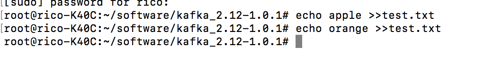

Kafka安装和配置
介绍
Apache Kafka是分布式发布-订阅消息系统。它最初由LinkedIn公司开发，之后成为Apache项目的一部分。Kafka是一种快速、可扩展的、设计内在就是分布式的，分区的和可复制的提交日志服务。Kafka 使用Zookeeper 来保存相关配置信息
Apache Kafka与传统消息系统相比，有以下不同：
- 它被设计为一个分布式系统，易于向外扩展,支持在线水平扩展；
- 它同时为发布和订阅提供高吞吐量；
- 支持Kafka Server间的消息分区，及分布式消费，同时保证每个Partition内的消息顺序传输
- 它支持多订阅者，当失败时能自动平衡消费者；
- 以时间复杂度为O(1)的方式提供消息持久化能力，即使对TB级以上数据也能保证常数时间复杂度的访问性能
- 支持分组，比如kafka中发布一个东西，多个订阅者可以分组，同一个组里只有一个订阅者会收到该消息，这样可以用作负载均衡
为何使用消息系统
解耦
在项目启动之初来预测将来项目会碰到什么需求，是极其困难的。消息系统在处理过程中间插入了一个隐含的、基于数据的接口层，两边的处理过程都要实现这一接口。这允许你独立的扩展或修改两边的处理过程，只要确保它们遵守同样的接口约束。
冗余
有些情况下，处理数据的过程会失败。除非数据被持久化，否则将造成丢失。消息队列把数据进行持久化直到它们已经被完全处理，通过这一方式规避了数据丢失风险。许多消息队列所采用的”插入-获取-删除”范式中，在把一个消息从队列中删除之前，需要你的处理系统明确的指出该消息已经被处理完毕，从而确保你的数据被安全的保存直到你使用完毕。
扩展性
因为消息队列解耦了你的处理过程，所以增大消息入队和处理的频率是很容易的，只要另外增加处理过程即可。不需要改变代码、不需要调节参数。扩展就像调大电力按钮一样简单。
灵活性 & 峰值处理能力
在访问量剧增的情况下，应用仍然需要继续发挥作用，但是这样的突发流量并不常见；如果为以能处理这类峰值访问为标准来投入资源随时待命无疑是巨大的浪费。使用消息队列能够使关键组件顶住突发的访问压力，而不会因为突发的超负荷的请求而完全崩溃。
可恢复性
系统的一部分组件失效时，不会影响到整个系统。消息队列降低了进程间的耦合度，所以即使一个处理消息的进程挂掉，加入队列中的消息仍然可以在系统恢复后被处理。
顺序保证
在大多使用场景下，数据处理的顺序都很重要。大部分消息队列本来就是排序的，并且能保证数据会按照特定的顺序来处理。Kafka保证一个Partition内的消息的有序性。
缓冲
在任何重要的系统中，都会有需要不同的处理时间的元素。例如，加载一张图片比应用过滤器花费更少的时间。消息队列通过一个缓冲层来帮助任务最高效率的执行———写入队列的处理会尽可能的快速。该缓冲有助于控制和优化数据流经过系统的速度。
异步通信
很多时候，用户不想也不需要立即处理消息。消息队列提供了异步处理机制，允许用户把一个消息放入队列，但并不立即处理它。想向队列中放入多少消息就放多少，然后在需要的时候再去处理它们。
常用Message Queue对比
RabbitMQ
RabbitMQ是使用Erlang编写的一个开源的消息队列，本身支持很多的协议：AMQP，XMPP, SMTP, STOMP，也正因如此，它非常重量级，更适合于企业级的开发。同时实现了Broker构架，这意味着消息在发送给客户端时先在中心队列排队。对路由，负载均衡或者数据持久化都有很好的支持。
Redis
Redis是一个基于Key-Value对的NoSQL数据库，开发维护很活跃。虽然它是一个Key-Value数据库存储系统，但它本身支持MQ功能，所以完全可以当做一个轻量级的队列服务来使用。对于RabbitMQ和Redis的入队和出队操作，各执行100万次，每10万次记录一次执行时间。测试数据分为128Bytes、512Bytes、1K和10K四个不同大小的数据。实验表明：入队时，当数据比较小时Redis的性能要高于RabbitMQ，而如果数据大小超过了10K，Redis则慢的无法忍受；出队时，无论数据大小，Redis都表现出非常好的性能，而RabbitMQ的出队性能则远低于Redis。
ZeroMQ
ZeroMQ号称最快的消息队列系统，尤其针对大吞吐量的需求场景。ZMQ能够实现RabbitMQ不擅长的高级/复杂的队列，但是开发人员需要自己组合多种技术框架，技术上的复杂度是对这MQ能够应用成功的挑战。ZeroMQ具有一个独特的非中间件的模式，你不需要安装和运行一个消息服务器或中间件，因为你的应用程序将扮演这个服务器角色。你只需要简单的引用ZeroMQ程序库，可以使用NuGet安装，然后你就可以愉快的在应用程序之间发送消息了。但是ZeroMQ仅提供非持久性的队列，也就是说如果宕机，数据将会丢失。其中，Twitter的Storm 0.9.0以前的版本中默认使用ZeroMQ作为数据流的传输（Storm从0.9版本开始同时支持ZeroMQ和Netty作为传输模块）。
ActiveMQ
ActiveMQ是Apache下的一个子项目。 类似于ZeroMQ，它能够以代理人和点对点的技术实现队列。同时类似于RabbitMQ，它少量代码就可以高效地实现高级应用场景。
Kafka/Jafka
Kafka是Apache下的一个子项目，是一个高性能跨语言分布式发布/订阅消息队列系统，而Jafka是在Kafka之上孵化而来的，即Kafka的一个升级版。具有以下特性：快速持久化，可以在O(1)的系统开销下进行消息持久化；高吞吐，在一台普通的服务器上既可以达到10W/s的吞吐速率；完全的分布式系统，Broker、Producer、Consumer都原生自动支持分布式，自动实现负载均衡；支持Hadoop数据并行加载，对于像Hadoop的一样的日志数据和离线分析系统，但又要求实时处理的限制，这是一个可行的解决方案。Kafka通过Hadoop的并行加载机制统一了在线和离线的消息处理。Apache Kafka相对于ActiveMQ是一个非常轻量级的消息系统，除了性能非常好之外，还是一个工作良好的分布式系统。
Kafka架构
Broker
Kafka集群包含一个或多个服务器，这种服务器被称为broker
Topic
每条发布到Kafka集群的消息都有一个类别，这个类别被称为Topic。（物理上不同Topic的消息分开存储，逻辑上一个Topic的消息虽然保存于一个或多个broker上但用户只需指定消息的Topic即可生产或消费数据而不必关心数据存于何处）
Partition
Parition是物理上的概念，每个Topic包含一个或多个Partition.
Producer
负责发布消息到Kafka broker
Consumer
消息消费者，向Kafka broker读取消息的客户端。
Consumer Group
每个Consumer属于一个特定的Consumer Group（可为每个Consumer指定group name，若不指定group name则属于默认的group）。
Kafka拓扑结构
如上图所示，一个典型的Kafka集群中包含若干Producer（可以是web前端产生的Page View，或者是服务器日志，系统CPU、Memory等），若干broker（Kafka支持水平扩展，一般broker数量越多，集群吞吐率越高），若干Consumer Group，以及一个Zookeeper集群。Kafka通过Zookeeper管理集群配置，选举leader，以及在Consumer Group发生变化时进行rebalance。Producer使用push模式将消息发布到broker，Consumer使用pull模式从broker订阅并消费消息
Topic & Partition
Topic在逻辑上可以被认为是一个queue，每条消费都必须指定它的Topic，可以简单理解为必须指明把这条消息放进哪个queue里。为了使得Kafka的吞吐率可以线性提高，物理上把Topic分成一个或多个Partition，每个Partition在物理上对应一个文件夹，该文件夹下存储这个Partition的所有消息和索引文件。若创建topic1和topic2两个topic，且分别有13个和19个分区，则整个集群上会相应会生成共32个文件夹（本文所用集群共8个节点，此处topic1和topic2 replication-factor均为1），如下图所示。
每个日志文件都是一个log entry序列，每个log entry包含一个4字节整型数值（值为N+5），1个字节的”magic value”，4个字节的CRC校验码，其后跟N个字节的消息体。每条消息都有一个当前Partition下唯一的64字节的offset，它指明了这条消息的起始位置。磁盘上存储的消息格式如下：
message length ： 4 bytes (value: 1+4+n)
“magic” value ： 1 byte
crc ： 4 bytes
payload ： n bytes
这个log entry并非由一个文件构成，而是分成多个segment，每个segment以该segment第一条消息的offset命名并以“.kafka”为后缀。另外会有一个索引文件，它标明了每个segment下包含的log entry的offset范围，如下图所示。图源水印

因为每条消息都被append到该Partition中，属于顺序写磁盘，因此效率非常高（经验证，顺序写磁盘效率比随机写内存还要高，这是Kafka高吞吐率的一个很重要的保证）。

对于传统的message queue而言，一般会删除已经被消费的消息，而Kafka集群会保留所有的消息，无论其被消费与否。当然，因为磁盘限制，不可能永久保留所有数据（实际上也没必要），因此Kafka提供两种策略删除旧数据。一是基于时间，二是基于Partition文件大小。例如可以通过配置$KAFKA_HOME/config/server.properties，让Kafka删除一周前的数据，也可在Partition文件超过1GB时删除旧数据
这里要注意，因为Kafka读取特定消息的时间复杂度为O(1)，即与文件大小无关，所以这里删除过期文件与提高Kafka性能无关。选择怎样的删除策略只与磁盘以及具体的需求有关。另外，Kafka会为每一个Consumer Group保留一些metadata信息——当前消费的消息的position，也即offset。这个offset由Consumer控制。正常情况下Consumer会在消费完一条消息后递增该offset。当然，Consumer也可将offset设成一个较小的值，重新消费一些消息。因为offet由Consumer控制，所以Kafka broker是无状态的，它不需要标记哪些消息被哪些消费过，也不需要通过broker去保证同一个Consumer Group只有一个Consumer能消费某一条消息，因此也就不需要锁机制，这也为Kafka的高吞吐率提供了有力保障。
Producer消息路由
Producer发送消息到broker时，会根据Paritition机制选择将其存储到哪一个Partition。如果Partition机制设置合理，所有消息可以均匀分布到不同的Partition里，这样就实现了负载均衡。如果一个Topic对应一个文件，那这个文件所在的机器I/O将会成为这个Topic的性能瓶颈，而有了Partition后，不同的消息可以并行写入不同broker的不同Partition里，极大的提高了吞吐率。可以在$KAFKA_HOME/config/server.properties中通过配置项num.partitions来指定新建Topic的默认Partition数量，也可在创建Topic时通过参数指定，同时也可以在Topic创建之后通过Kafka提供的工具修改。
在发送一条消息时，可以指定这条消息的key，Producer根据这个key和Partition机制来判断应该将这条消息发送到哪个Parition。Paritition机制可以通过指定Producer的paritition. class这一参数来指定，该class必须实现kafka.producer.Partitioner接口
Consumer Group
使用Consumer high level API时，同一Topic的一条消息只能被同一个Consumer Group内的一个Consumer消费，但多个Consumer Group可同时消费这一消息。
这是Kafka用来实现一个Topic消息的广播（发给所有的Consumer）和单播（发给某一个Consumer）的手段。一个Topic可以对应多个Consumer Group。如果需要实现广播，只要每个Consumer有一个独立的Group就可以了。要实现单播只要所有的Consumer在同一个Group里。用Consumer Group还可以将Consumer进行自由的分组而不需要多次发送消息到不同的Topic。
实际上，Kafka的设计理念之一就是同时提供离线处理和实时处理。根据这一特性，可以使用Storm这种实时流处理系统对消息进行实时在线处理，同时使用Hadoop这种批处理系统进行离线处理，还可以同时将数据实时备份到另一个数据中心，只需要保证这三个操作所使用的Consumer属于不同的Consumer Group即可。下图是Kafka在Linkedin的一种简化部署示意图。

安装 kafka
下载地址：https://kafka.apache.org/downloads
wget http://mirrors.tuna.tsinghua.edu.cn/apache/kafka/1.0.1/kafka_2.12-1.0.1.tgz
1. 启动Zookeeper
使用安装包中的脚本启动单节点Zookeeper 实例：
./bin/zookeeper-server-start.sh -daemon config/zookeeper.properties
-daemon参数表示静默后台启动
启动完成后输入JPS命令可以看到ZK已经启动
其实这是QuorumPeerMain是zookeeper集群的启动入口类,是用来加载配置启动QuorumPeer线程的
2. 启动Kafka 服务
修改 kafka-server 的配置文件
vim config/server.properties
修改其中的：
broker.id=1
log.dir=/data/kafka/logs1
使用kafka-server-start.sh 启动kafka 服务：
./bin/kafka-server-start.sh config/server.properties

3.创建topic
使用kafka-topics.sh 创建单分区单副本的topic test：
# 连接zookeeper, 创建一个名为test的topic
# replication-factor表示该topic需要在不同的broker中保存几份，这里replication-factor设置为1, 表示在1个broker中保存
./bin/kafka-topics.sh --create --zookeeper localhost:2181 --replication-factor 1 --partitions 1 --topic test
查看 topic 列表：
./bin/kafka-topics.sh --list --zookeeper localhost:2181

查询创建的 topic 列表报错：
解决方法:
vim /etc/hosts
将 host 里的
127.0.0.1 localhost localhost.localdomain localhost4 localhost4.localdomain4
::1 localhost localhost.localdomain localhost6 localhost6.localdomain6
修改为：
127.0.0.1 localhost localhost.localdomain localhost4 localhost4.localdomain4
::1 ip6-localhost ip6-localhost.localdomain localhost6 localhost6.localdomain6
方法参考：zookeeper unable to open socket to localhost/0:0:0:0:0:0:0:1:2181
再次查询就不报错了。
4、产生消息
使用 kafka-console-producer.sh 发送消息：
./bin/kafka-console-producer.sh --broker-list localhost:9092 --topic test

5、消费消息
使用 kafka-console-consumer.sh 接收消息并在终端打印：
./bin/kafka-console-consumer.sh --zookeeper localhost:2181 --topic test --from-beginning
打开个新的命令窗口执行上面命令即可查看信息：
##6、查看描述 TOPICS 信息
./bin/kafka-topics.sh --describe --zookeeper localhost:2181 --topic test
结果：

第一行给出了所有分区的摘要，每个附加行给出了关于一个分区的信息。 由于我们只有一个分区，所以只有一行。
“Leader”: 是负责给定分区的所有读取和写入的节点。 每个节点将成为分区随机选择部分的领导者。
“Replicas”: 是复制此分区日志的节点列表，无论它们是否是领导者，或者即使他们当前处于活动状态。
“Isr”: 是一组“同步”副本。这是复制品列表的子集，当前活着并被引导到领导者。
集群配置
Kafka 支持两种模式的集群搭建：可以在单机上运行多个 broker 实例来实现集群，也可在多台机器上搭建集群，下面介绍下如何实现单机多 broker 实例集群，其实很简单，只需要如下配置即可。
单机多BROKER 集群配置
利用单节点部署多个 broker。 不同的 broker 设置不同的 id，监听端口及日志目录。 例如：
cp config/server.properties config/server-2.properties
cp config/server.properties config/server-3.properties
vim config/server-2.properties
vim config/server-3.properties
修改 ：
broker.id=2
listeners = PLAINTEXT://your.host.name:9093
log.dir=/data/kafka/logs2
和
broker.id=3
listeners = PLAINTEXT://your.host.name:9094
log.dir=/data/kafka/logs3

启动Kafka服务：
./bin/kafka-server-start.sh config/server-2.properties &
./bin/kafka-server-start.sh config/server-3.properties &
至此，单机多broker实例的集群配置完毕。
多机多 BROKER 集群配置
分别在多个节点按上述方式安装 Kafka，配置启动多个 Zookeeper 实例。
假设三台机器 IP 地址是 ： 192.168.153.135， 192.168.153.136， 192.168.153.137
分别配置多个机器上的 Kafka 服务，设置不同的 broker id，zookeeper.connect 设置如下:
vim config/server.properties
里面的 zookeeper.connect
修改为：
zookeeper.connect=192.168.153.135:2181,192.168.153.136:2181,192.168.153.137:2181
使用 Kafka Connect 来导入/导出数据
从控制台写入数据并将其写回控制台是一个方便的起点，但您可能想要使用其他来源的数据或将数据从 Kafka 导出到其他系统。对于许多系统，您可以使用 Kafka Connect 来导入或导出数据，而不必编写自定义集成代码。
Kafka Connect 是 Kafka 包含的一个工具，可以将数据导入和导出到 Kafka。它是一个可扩展的工具，运行 连接器，实现与外部系统交互的自定义逻辑。在这个快速入门中，我们将看到如何使用简单的连接器运行 Kafka Connect，这些连接器将数据从文件导入到 Kafka topic，并将数据从 Kafka topic 导出到文件。
首先，我们将通过创建一些种子数据开始测试：
echo -e "hello\nworld" > test.txt
接下来，我们将启动两个以独立模式运行的连接器，这意味着它们将在单个本地专用进程中运行。我们提供三个配置文件作为参数。首先是 Kafka Connect 过程的配置，包含常见的配置，例如要连接的 Kafka 代理以及数据的序列化格式。其余的配置文件都指定一个要创建的连接器。这些文件包括唯一的连接器名称，要实例化的连接器类以及连接器所需的任何其他配置。
在起下面的服务前，zk和kafka-server要先启动好
./bin/connect-standalone.sh config/connect-standalone.properties config/connect-file-source.properties config/connect-file-sink.properties
Kafka 附带的这些示例配置文件使用您之前启动的默认本地群集配置，并创建两个连接器：第一个是源连接器，用于读取输入文件中的行，并将每个连接生成为 Kafka topic，第二个为连接器它从 Kafka topic 读取消息，并在输出文件中产生每行消息。
下面是connect-file-source.properties文件的内容
下面是connect-file-sink.properties文件的内容

在启动过程中，您会看到一些日志消息，其中一些指示连接器正在实例化。Kafka Connect 进程启动后，源连接器应该开始读取 test.txt topic connect-test，并将其生成 topic ，并且接收器连接器应该开始读取 topic 中的消息 connect-test 并将其写入文件 test.sink.txt。我们可以通过检查输出文件的内容来验证通过整个管道传输的数据：
数据存储在 Kafka topic 中 connect-test，因此我们也可以运行控制台使用者来查看 topic 中的数据
./bin/kafka-console-consumer.sh --bootstrap-server localhost:9092 --topic connect-test --from-beginning
连接器继续处理数据，所以我们可以将数据添加到文件中，并看到它在管道中移动：
echo apple>> test.txt
echo orange>> test.txt
echo banana>> test.txt

而且我们发现目录下多了个文件 test.sink.txt
参考
https://blog.csdn.net/wangjia184/article/details/37921183
https://www.cnblogs.com/cyfonly/p/5954614.html
http://www.54tianzhisheng.cn/2018/01/04/Kafka/
https://zhuanlan.zhihu.com/p/27551928
This blog is under a CC BY-NC-SA 3.0 Unported License
本文链接：http://hogwartsrico.github.io/2017/04/08/Kafka-Install-and-ABC/